Every article has two optional images: an intro image, which appears in a listing like a category blog page; and a full article image, which appears at the top of the article.
4.1 Images in Articles creates the Astronomy category, Crab Nebula article, and media manager folder used in this tutorial.
Setup
Get the Images
Upload the following images required for the tutorial.
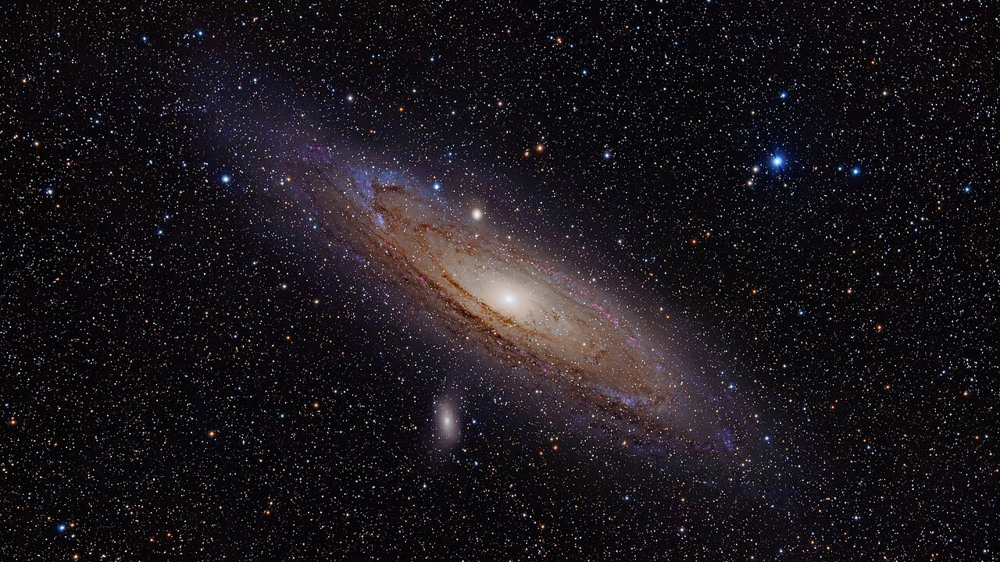
Andromeda Full
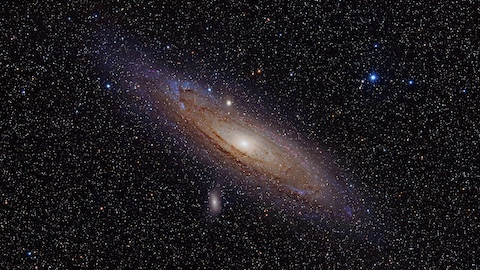
Andromeda Intro
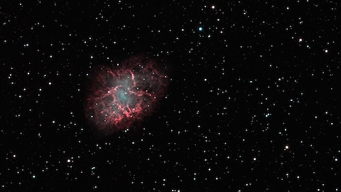
Crab Nebula Intro
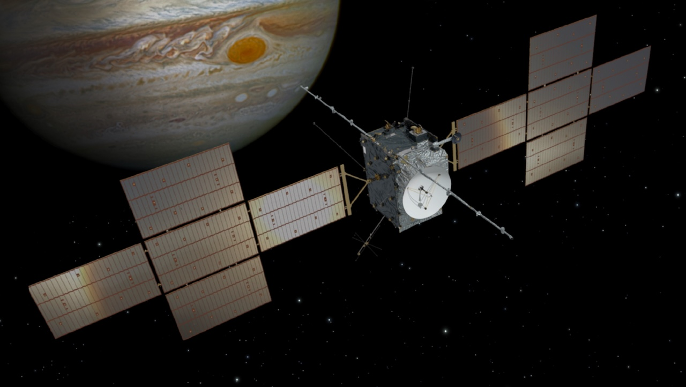
Jupiter Full
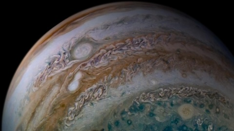
Jupiter Intro
Log in to Joomla backend and navigate to the Home Dashboard.
Right-click each image above and save it to your computer.
After downloading all the images, upload them to the Joomla media manager:
In the Administrator Menu, click Content > Media, then navigate to Images > Astronomy (Created in 4.1).
Upload the images to the Astronomy folder, using drag-and-drop or the Upload button at the top of the page.
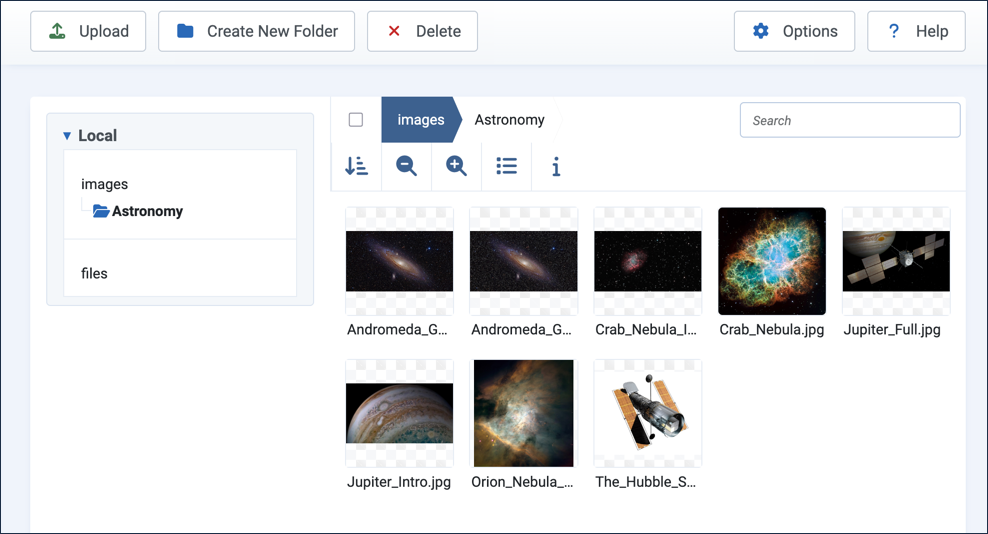
The new images in the Astronomy folder along with those uploaded in tutorial 4.1
Create Additional Articles
In the Administrator Menu, click Content > Articles.
Click New to add a new article.
Title:Jupiter
Category:Astronomy
Article Text:The largest planet in our solar system, Jupiter is a gas giant more than twice as massive as all the other planets combined.
Click Save & New.
Title:Andromeda Galaxy
Category:Astronomy
Article Text:The Andromeda Galaxy is the nearest large galaxy to the Milky Way, and on a dark, clear night it's visible to the naked eye.
Click Save & Close. Result: We now have three articles in the Astronomy category to work with.
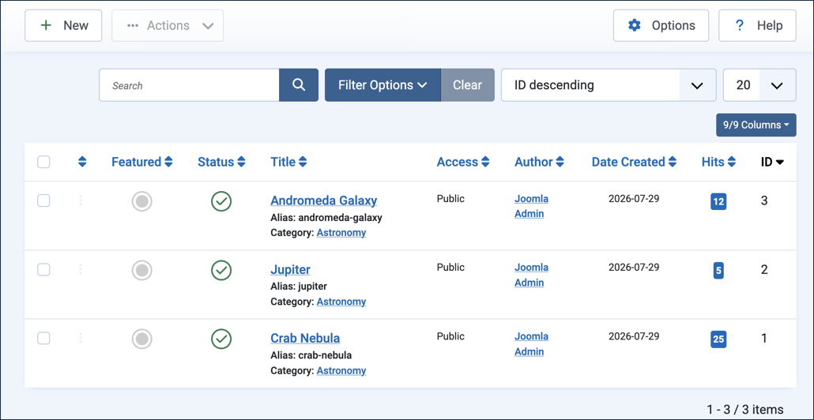
Steps
Create a Category Blog Menu
Create a menu item to list our articles.
In the Administrator Menu, click Menus > Main Menu, then click New.
Title:Astronomy Articles Blog
Menu Item Type:Articles > Category Blog
Category:Astronomy
Save & Close
View the site and click the Astronomy Articles Blog menu item. Result: All three articles are listed with a short intro. Note: Articles appear with their full text.
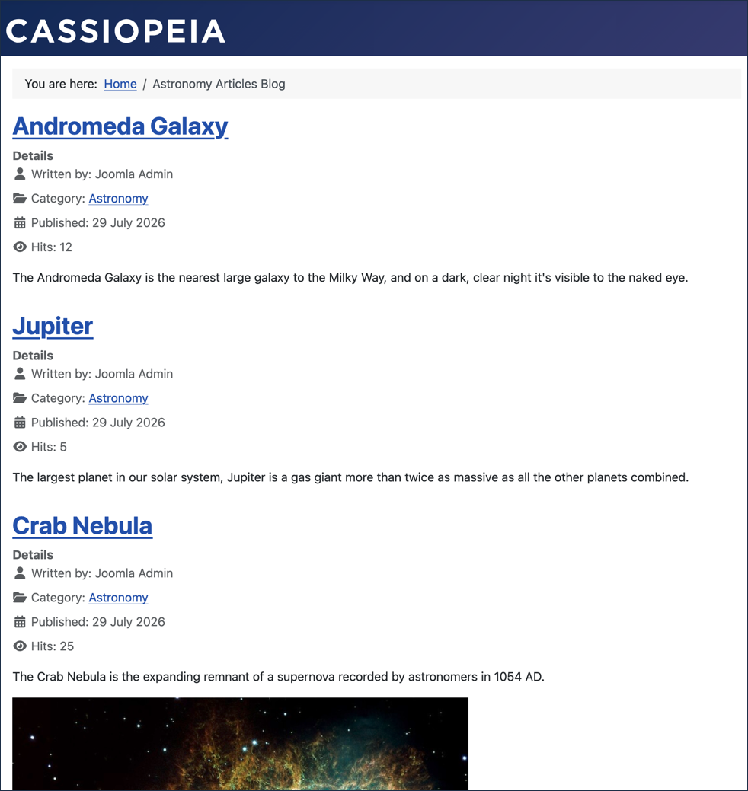
Add Intro Images
An intro image appears before the title when an article appears in a listing, such as our category blog page. They add visual interest to the list and insight into the article.
In the Administrator Menu, click Content > Articles, then click Crab Nebula to open it for editing.
Click the Images and Links tab.
Under Intro Image, click Select.Result: The Media Manager appears.
Tick the Crab_Nebula_Intro.jpg checkbox then click Select. Result: The Media Manager is dismissed and the image appears in the form.
Add alternate text in the field beneath the image: Crab Nebula.
Save & Close
Open Jupiter for editing.
Click the Images and Links tab.
Under Intro Image, click Select.Result: The Media Manager appears.
Tick the Jupiter_Intro.jpg checkbox then click Select. Result: The Media Manager is dismissed and the image appears in the form.
Add alternate text in the field beneath the image: Jupiter
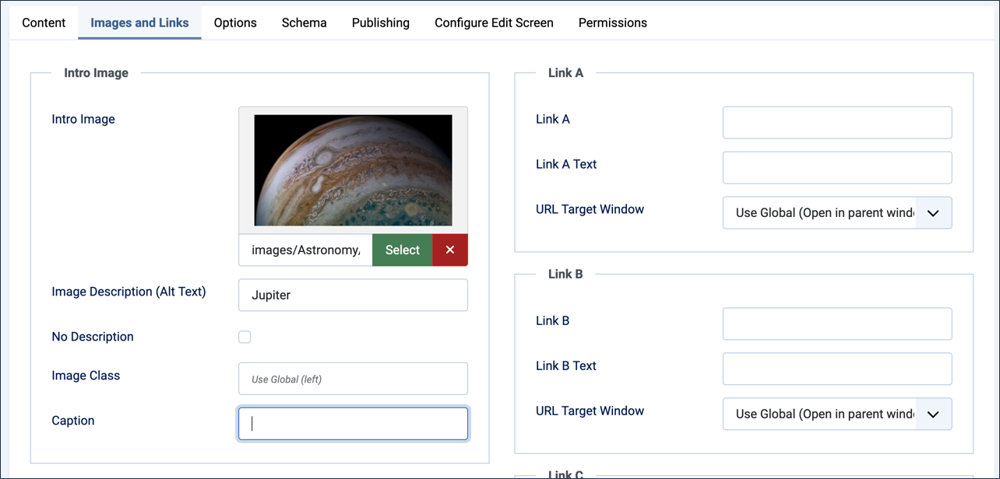
Save & Close
Open Andromeda Galaxy for editing.
Click the Images and Links tab.
Under Intro Image, click Select.Result: The Media Manager appears.
Tick the Andromeda_Galaxy_Intro.jpg checkbox then click Select. Result: The Media Manager is dismissed and the image appears in the form.
Add alternate text in the field beneath the image: Andromeda Galaxy
Save & Close
View the site and refresh to the Astronomy Articles Blog page. Result: The articles now appear with intro images.
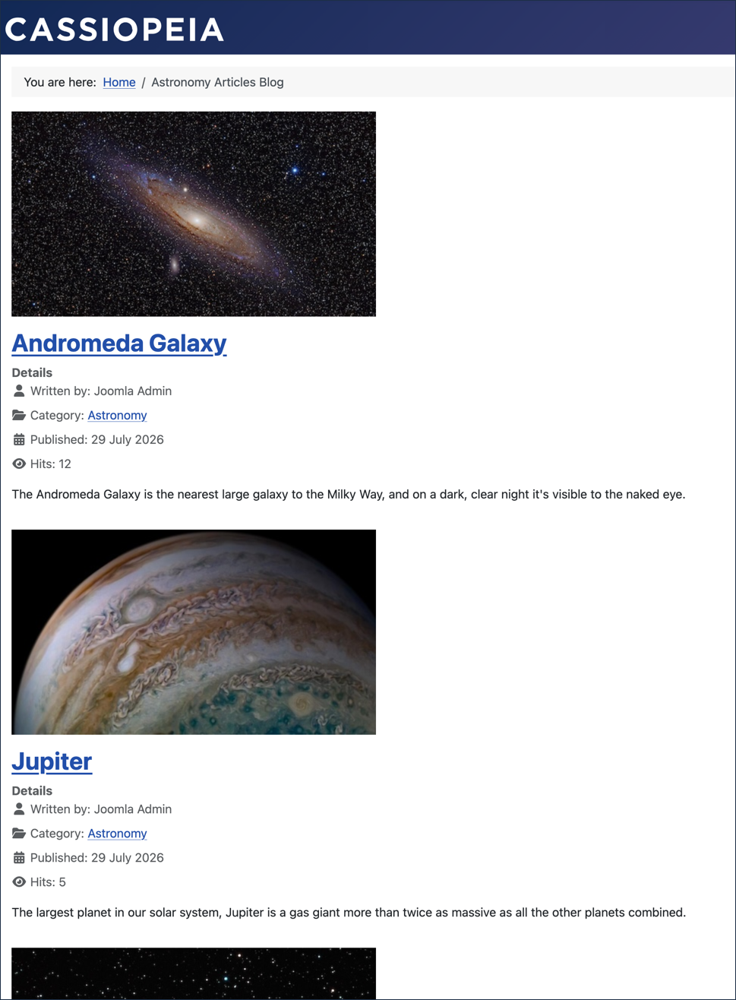
Category blog page intro images (two articles shown)
Click into Crab Nebula. Result: The article appears as it did before. The intro image does not appear. Note: An intro image is only shown in listings like the category blog page, not on the article's own page.
Add Full Article Images
A Full Article Image is an image that appears in a consistent position at the top of an article, with the exact placement and styling determined by the site template.
Edit the Andromeda Galaxy article
Click the Images and Links tab.
Under Full Article Image, click Select.
Select the Andromeda_Galaxy_Full.jpg
Add alternate text in the field beneath the image: Andromeda Galaxy
Save & Close
Edit the Jupiter article
Click the Images and Links tab.
Under Full Article Image, click Select.
Select the Jupiter_Full.jpg
Add alternate text in the field beneath the image: Jupiter and the JUICE spacecraft.
Enter a caption: The Jupiter Icy Moons Explorer (JUICE), an interplanetary spacecraft created by the European Space Agency (ESA).
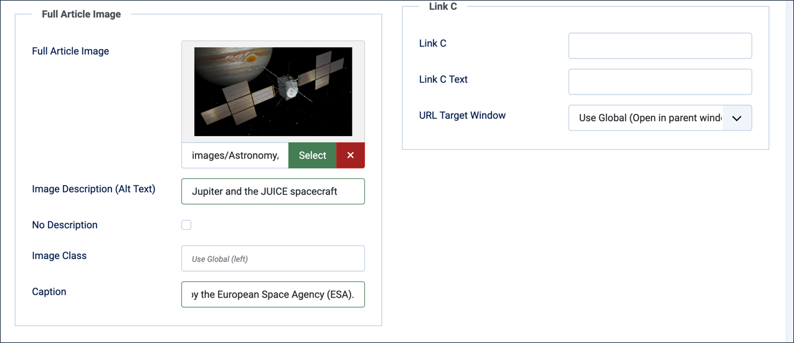
Save & Close
Observe the Results
View the site and refresh the Astronomy Articles Blog.
Open the Andromeda Galaxy article.
The article uses the same image for the Intro and Full Article images, saved as two files at different sizes.
Open the Jupiter article.
This article uses different Intro and Full Article images.
The Full Article image has a caption.
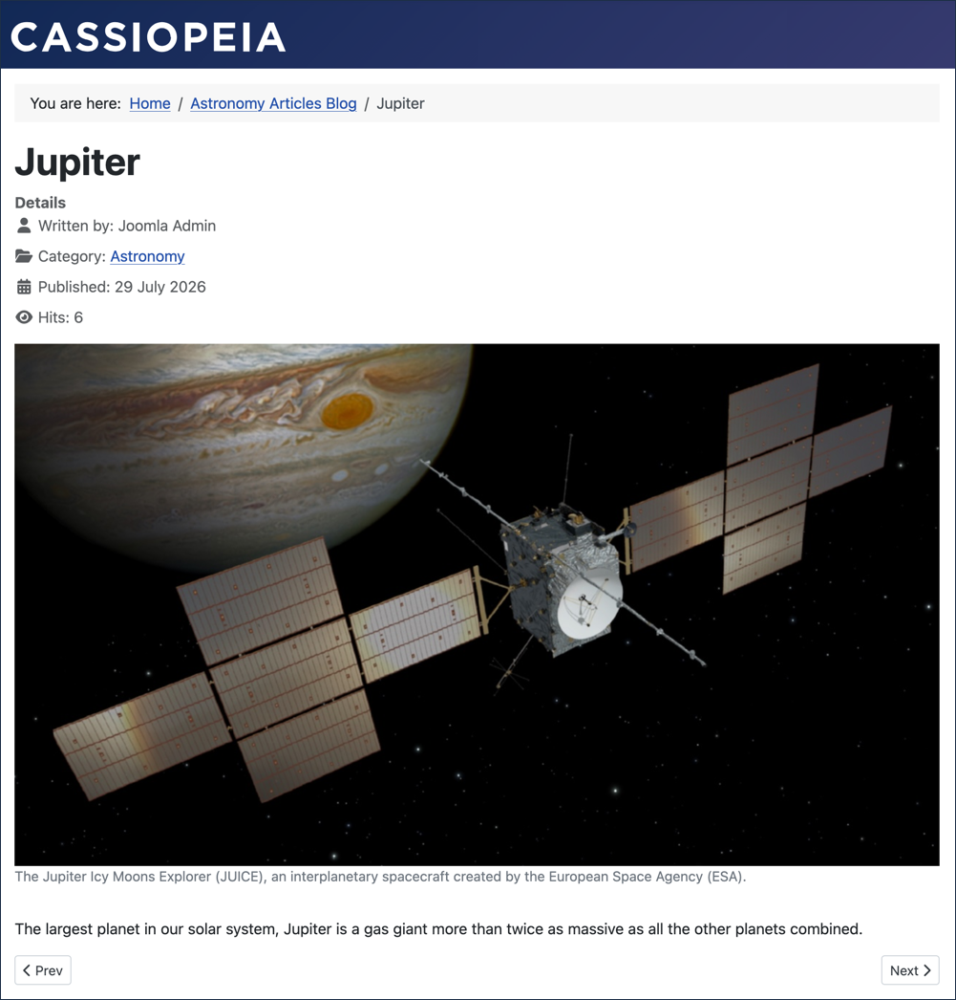
Open the Crab Nebula article.
This article uses only an Intro image.
The article contains a number of embedded images, but no Full Article image.
Concepts
If an image is purely decorative and doesn't need to be read aloud by screen readers, you can check No description instead of entering alt text.
The Full Article Image is frequently a full-width image used as a banner or hero for the article. Different templates place and style the image differently. Joomla's default Cassiopeia template positions the full article image inline with article text — for a full-width image, like the ones in this tutorial, that's not a problem.
A category blog page (and similar listings) shows an article's intro image along with the full article text. In a future tutorial we'll cover how to deal with it.
Both the Intro Image and Full Article Image render at whatever size you upload — unlike an image embedded directly in the article's text, neither field offers a built-in width or crop control. Thoughtful, consistent sizing across your images — a standard width for intro thumbnails, another for full-width hero images — goes a long way toward a tidy, professional-looking site.
Attribution
The images used in this tutorial came from the Wikimedia Commons website and comply with the licensing for each: